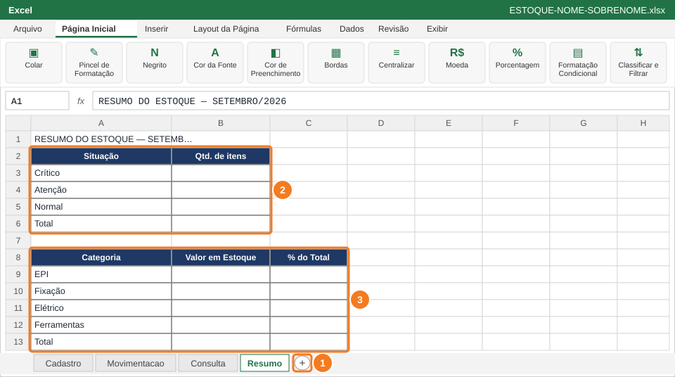
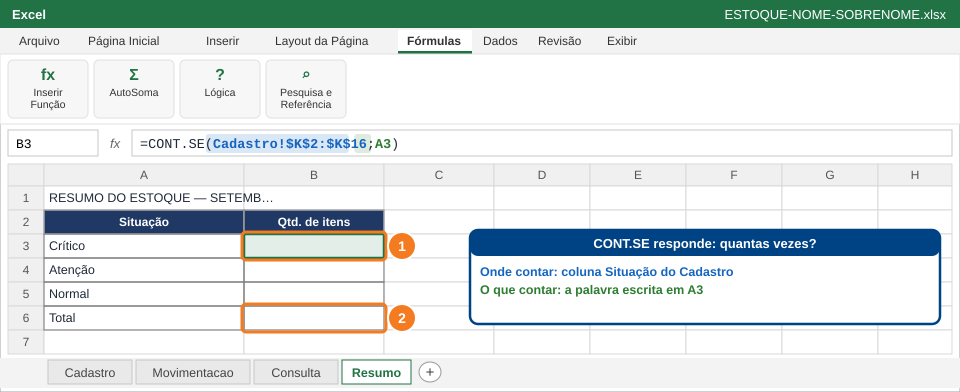
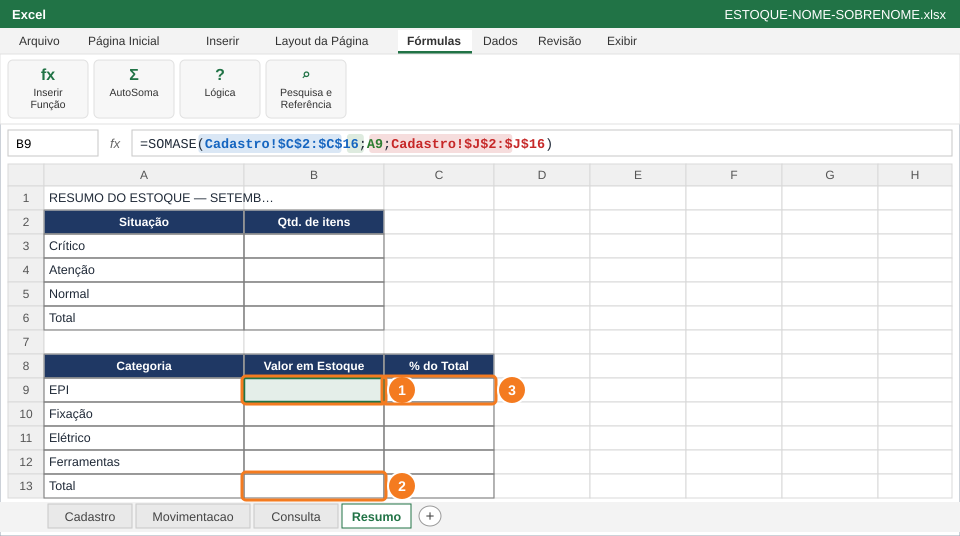

Montar um resumo para o gerente que responde: quantos itens estão em cada situação, quanto dinheiro há em cada categoria e se as saídas do mês ficaram dentro do limite.
Você vai usar
CONT.SE
SOMASE
SOMA
Formato Porcentagem
PROCH
SE
Aba de trabalho:Resumo (nova) · Slides de apoio: Arquivo 5 — slides 14–15 e 28–31
1
Crie a aba Resumo e monte os quadros

Nova aba (1), quadro de situação (2) e quadro de categorias (3).
Crie a aba Resumo (botão +) (1). Em A1 digite RESUMO DO ESTOQUE — SETEMBRO/2026.
Quadro de situação (2): A2 Situação, B2 Qtd. de itens, A3 Crítico, A4 Atenção, A5 Normal, A6 Total.
Quadro de categorias (3): A8 Categoria, B8 Valor em Estoque, C8 % do Total, A9 EPI, A10 Fixação, A11 Elétrico, A12 Ferramentas, A13 Total.
Formate os títulos dos quadros com o Pincel de Formatação e coloque bordas.
💡 DicaUse a imagem como modelo: com cada rótulo na célula certa, as fórmulas dos próximos passos funcionam do jeito que estão escritas.
2
Conte os itens de cada situação com CONT.SE

Em B3 (1), o CONT.SE conta quantas vezes a palavra de A3 aparece na coluna Situação. Em B6 (2), o total.
Em B3 (1), digite a fórmula abaixo.
Copie para B4 e B5: o critério A3 vira A4 (Atenção) e A5 (Normal).
Em B6 (2), digite =SOMA(B3:B5).
=CONT.SE(Cadastro!$K$2:$K$16;A3)
✅ VerifiqueO total em B6 é igual à quantidade de materiais cadastrados na aba Cadastro.
3
Some o valor de cada categoria com SOMASE

SOMASE em B9 (1), total em B13 (2) e percentual em C9 (3).
Em B9 (1), digite a fórmula abaixo, copie até B12 e formate como Moeda.
Em B13 (2): =SOMA(B9:B12).
Em C9 (3): =B9/$B$13. Formate como Porcentagem com 1 casa decimal e copie até C13.